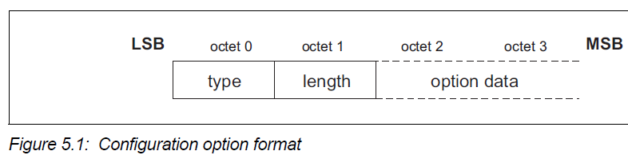

Configuration Parameter Options¶
Options are a mechanism to extend the configuration parameters. Options shall be transmitted as information elements containing an option type, an option length, and one or more option data fields.
The configuration option fields are:
Type (1 octet)
The option type field defines the parameters being configured. The most significant bit of the type determines the action taken if the option is not recognized.
0 - option must be recognized; if the option is not recognized then refuse the configuration request
1 - option is a hint; if the option is not recognized then skip the option and continue processing
Length (1 octet)
The length field defines the number of octets in the option data.
Option data
The contents of this field are dependent on the option type.
MAXIMUM TRANSMISSION UNIT (MTU)¶
This option specifies the maximum SDU size the sender of this option is capable of accepting for a channel. The type is 0x01, and the payload length is 2 octets, carrying the two-octet MTU size value as the only information element.
MTU is not a negotiated value. each device indicates to the remote device that the local device can receive, in this channel, an MTU larger than the minimum required.
All L2CAP implementations shall support a minimum MTU of 48 octets over the ACLU logical link and 23 octets over the LE-U logical link.

The option data field is:
Maximum Transmission Unit - MTU (2 octets)
The MTU field is the maximum SDU size, in octets, that the originator of the Request can accept for this channel.
The MTU is asymmetric and the sender of the Request shall specify the MTU it can receive on this channel if it differs from the default value.
L2CAP implementations shall support a minimum MTU size of 48 octets. The default value is 672 octets
Note
The default MTU was selected based on the payload carried by two baseband DH5 packets (2*341=682 octets) minus the baseband ACL headers (2*2=4 octets) and a 6-octet L2CAP header.
the L2CAP header length is 4 octets, but for historical reasons an L2CAP header length of 6 bytes is used.
FLUSH TIMEOUT OPTION¶
This option is used to inform the recipient of the Flush Timeout the sender is going to use. This option shall not be used if the Extended Flow Specification is used.The Flush Timeout is defined in the BR/EDR Baseband specification.
The Flush Timeout option is negotiable.
The flush timeout applies to all channels on the same
ACL logical transport but may be overridden on a packet by packet basis by
marking individual L2CAP packets as non-automatically-flushable via the
Packet_Boundary_Flag in the HCI ACL Data Packet.
The option data field is:
Flush Timeout
This value is the Flush Timeout in milliseconds. This is an asymmetric value and the sender of the Request shall specify its flush timeout value if it differs from the default value of 0xFFFF.
Possible values are:
0x0001 - no retransmissions at the baseband level should be performed since the minimum polling interval is 1.25 ms.
0x0002 to 0xFFFE - Flush Timeout used by the baseband.
0xFFFF - an infinite amount of retransmissions. This is also referred to as a ’reliable channel’. In this case, the baseband shall continue retransmissions until physical link loss is declared by link manager timeouts.